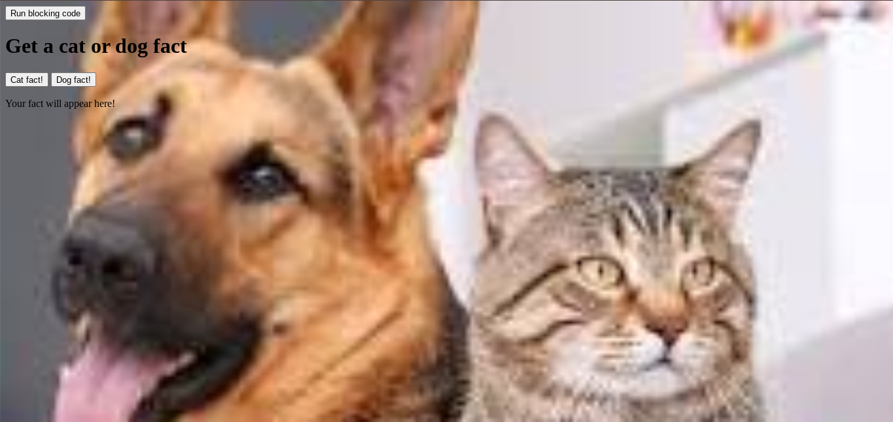

This generator gives you some fun facts that you may not have known. This project was made using java script, css, and html. The html has all of the words and the picture in it. The css was used to adjust the picture to become the background. The java script was used to make the buttons work. It was also used to get the information from another site. It was used to display the information on screen so you could read it.
